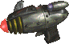
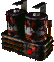
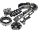

YK32 Pulse Pistol
Jump to navigation
Jump to search
YK32 Pulse Pistol
|  | |
|---|---|
| The YK32 is an electrical pulse weapon that was developed by the Yuma Flats Energy Consortium. Though powerful, the YK32 was never considered a practical weapon due to its inefficient energy usage and bulky design. Min ST: 3. | |
| Damage | 32 - 46 |
| Single | AP: 4 |
| Range | 18 |
| Damage type | Electric |
| Ammo |  |
| Ammo capacity | 5 |
| Weapon Perk | Penetrate |
| Strength reqiuired | 3 |
| Item Durability | 100 |
| Weight | 2267 grams |
| Base price | 3000 caps |
| Exp for Crafting | 630 |
| Blueprint | Yes |
| Requirments to craft: | 3x3x 1x 1xProfession: Scientist 3 |
| Notes | This weapon is awesome in PvP since its omits nearly every armor in game(except for Tesla Armor, Brothood and Enclave combat armors). It has terrible range and very small magazine. |